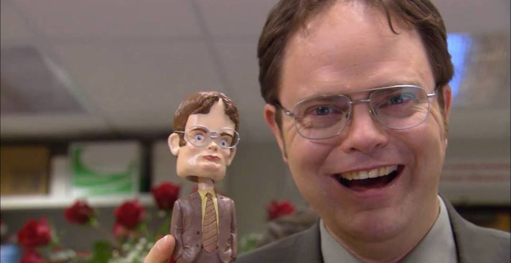
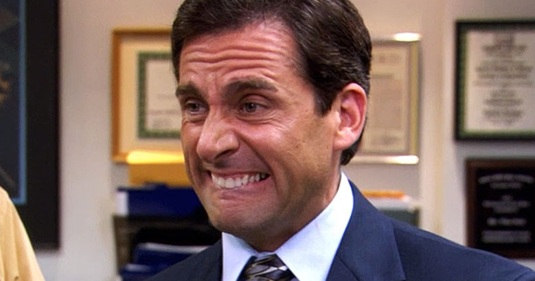

The Office aired on television from 2005 to 2013.
It currently holds a rating of 89% on Rotten Tomatoes.
Has 9 seasons with an average of 23 episodes each. It was a remake of the original, The Office(UK), except with many more jokes and cooler actors and actresses.
Here are some actors and actresses on The Office...
Character Names:
1._____Dwight Schrute_____ 2.______Michael Scott______3._______Pam Beesly_______
 Actor- Rainn Wilson--------------Actor- Steve Carell---------------Actress- Jenna Fischer